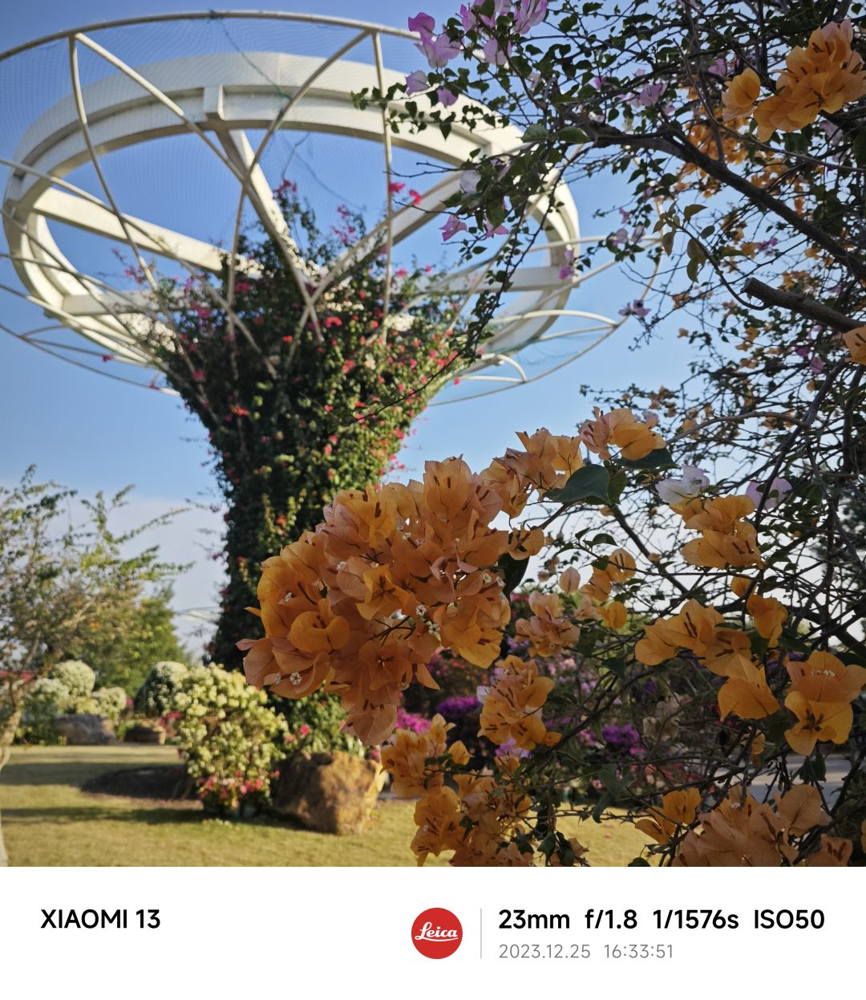

南宁市的名称来源于元朝时期。 当时，南宁属于南疆之地，中央政府为了安抚南疆这边的地区，而把南疆的这块地方取名为南宁，南代表的是南疆，而宁是安宁的意思。具体来说，根据《元史》的记载，在至元二十九年（1292年），上思州的黄胜许反元。延祐六年（1319年）六月，右江来安路的岑世兴又起兵造反，杀了归州知州，夺取了州印。虽然元朝朝廷多次派重兵前来镇压，但都没有取得很大的效果。这两支反元的队伍日益壮大，活动范围不断扩大。到了至治三年（1323年）七月，元英宗派遣使者来到邕州招安，以招谕的方式迫使黄胜许、岑世兴归顺。在次年的十二月和泰定元年（1324年）六月，黄胜许、岑世兴先后派代表到元大都朝贡。泰定元年九月，为了庆祝南疆的绥服安宁，元朝泰定皇帝颁令改邕州路总管府兼左右两江溪峒镇抚为南宁路，从此南宁的名称开始沿用至今。
南宁烤鸭是一种地方特色的美食，它以独特的口味和烹饪方式深受当地人民喜爱。南宁烤鸭的特点在于其皮酥肉嫩，油而不腻。 在南宁，有许多知名的烤鸭店。例如，南宁市大师烤鸭总店星湖分店，该店位于南宁星湖路北二里58号，主要提供烧卤等服务。
这道南宁风味的甜酒罗非鱼，真是令人耳目一新。鱼肉外酥里嫩，每一口都能感受到罗非鱼的鲜美与甜酒的香醇完美融合，独特的酱汁让人回味无穷。炸制时恰到好处的火候使得鱼皮微微酥脆，鱼肉保持了多汁的口感。番茄的加入更是提鲜增色，酸甜可口。
南宁市拥有丰富的自然资源和良好的生态环境，是中国著名的旅游城市之一。南宁市境内有众多风景名胜区和自然保护区，如青秀山、邕江、武鸣湖等。
南宁市是中国华南、西南和东南亚经济圈的结合部，是环北部湾沿岸重要经济中心。面向东南亚、背靠大西南，东邻粤港澳琼、西接印度半岛，是华南沿海和西南腹地两大经济区的结合部以及东南亚经济圈的连接点，是新崛起的大西南出海通道枢纽城市。
南宁属于亚热带季风气候，四季分明，雨量充沛，日照充足，无霜期长，适宜多种作物生长。
南宁市作为广西壮族自治区的首府，地理位置优越，坐落于自治区南部偏西，与越南相邻。这座城市坐落在北回归线上，拥有典型的亚热带季风气候，全年温暖湿润，阳光充足，雨水充沛。地形多样，以平地为主，同时也有低山、石山、丘陵和台地等地貌类型的点缀。这样的地理环境孕育了南宁市丰富的自然资源和优美的生态环境，使其成为了一个适合居住和旅游的地方。南宁市不仅自然风光秀丽，还拥有诸多著名景点，如青秀山、邕江和武鸣湖等，吸引着国内外游客。此外，南宁市在经济发展方面也具有战略意义，处于华南、西南及东南亚经济圈的重要交汇点，是通往东南亚各国的重要门户，促进了区域内外的交流与合作。
在南宁市的植物资源中，乔木树种有600种以上，以壳斗科、茶科、杜鹃花科、樟科、胡桃科、木兰科、大戟科为优势。此外，南宁市还有许多国家公布保护的一、二级野生植物，它们主要分布在广西大明山国家级自然保护区、龙山自治区级自然保护区、龙虎山自治区级自然保护区、武鸣三十六弄一陇均自治区级自然保护区等地。
包括大量的括野猪、黄、豹猫（野猫）、果子狸、穿山甲、黄鼠狼、竹鼠、水獭、果蝠、小蝙蝠等。这些动物不仅丰富了南宁市的生物多样性，也为科研和旅游业提供了宝贵的资源
南宁市位于广西壮族自治区，其水资源丰富，年均降雨量超过1200毫米，水系发达，拥有众多的江河湖库。流域面积50平方千米以上的河流有152条，主城区内有18条内河，以及南湖、凤凰湖、相思湖、明月湖、五象湖、灵水湖和罗波潭等7个湖泊，还有741座水库。
根据最新的数据，截至2023年底，南宁市的常住人口达到了894.08万人。这一数字是在广西壮族自治区常住人口比2022年末减少20万人的情况下实现的，显示出南宁市的人口总量实现了持续增长。此外，南宁市的城镇化率也在稳步提升，2023年末，城镇常住人口为638.08万人，城镇化率达到71.37%
需要注意的是，虽然南宁市的人口总量在增长，但人口的自然增长率却在下降。2023年，南宁市的人口自然增长率降到了1.53‰，人口自然增长量为1.36万人。这主要是受到生育观念变化、婚育年龄推迟以及生育成本提高等因素的影响，导致出生人口持续减少。
总的来说，南宁市的人口总量在持续增长，城镇化率也在稳步提升，但人口的自然增长率却呈现下降趋势。这些变化反映了南宁市社会经济的快速发展和人口结构的调整。
南宁市的民族文化非常丰富多彩，例如壮族的铜鼓、花山崖壁画，以及各种民族的民歌都享誉国内外。此外，南宁市的民族节日也非常有趣，比如壮族的三月三歌节、瑶族的达努节和盘王节、苗族的踩花山、仫佬族的走坡节、侗族的花炮节等。

大美广西 荣华南宁
welcome to Nanning|南宁欢迎您！